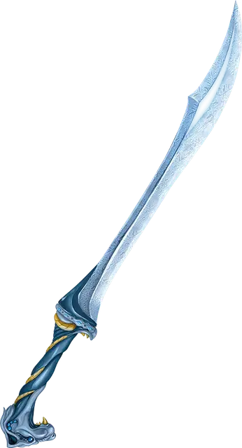

Морозный клинок
Frost Brand
Оружие (любой меч), очень редкое (требуется настройка)

Рекомендованная стоимость 5 001-50 000 зм
Если вы попадаете атакой, используя этот магический меч, цель получает дополнительный урон холодом 1к6. Кроме того, пока вы держите этот меч, вы обладаете сопротивлением урону огнём.
При температуре, не превышающей 0 °C, клинок испускает яркий свет в радиусе 10 футов и тусклый свет в радиусе ещё 10 футов.
Когда вы вынимаете оружие из ножен, вы можете погасить все источники немагического огня в пределах 30 футов. Это свойство можно использовать не чаще раза в час.